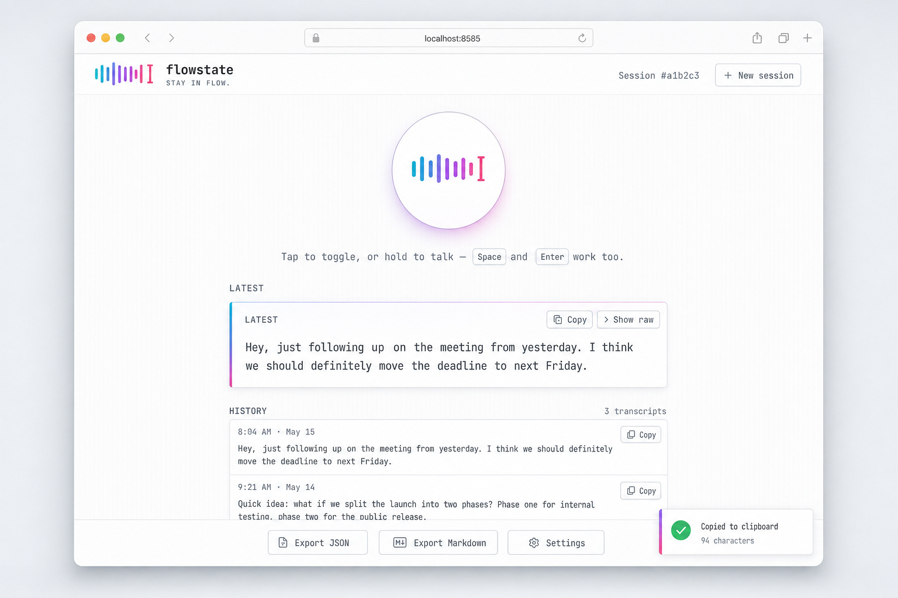

Speak
Press Enter, hold a key, or click a button, whichever interface you are in. A live mic meter shows it is listening. No menu-bar app, no daemon.
Open source · MIT · Mac, Linux, Windows
A keyboard-free way to think. flowstate captures your voice, cleans it with an LLM, and drops perfect text into any app, from your terminal or your browser.
go install github.com/mazen160/flowstate/cmd/flowstate@latest
$ flowstate ● Recording ▁▂▄█▆▃▁ — press Enter to stop ● Transcribing… ● Cleaning up… ✓ Done. (94 characters, 1.8s) Hey, just following up on the meeting from yesterday. I think we should definitely move the deadline to next Friday.
Cleaned text lands on stdout and your clipboard. Status goes to stderr, so pipes stay clean.
Press Enter, hold a key, or click a button, whichever interface you are in. A live mic meter shows it is listening. No menu-bar app, no daemon.
Filler words gone. Punctuation right. Self-corrections honored. Domain spellings preserved. Groq Whisper transcribes, then an LLM pass that knows prose from code.
Print to stdout. Copy to clipboard. Paste into the focused app. Or open the web UI and click Copy. A CLI citizen and a browser tab, not an island.
hey um so just wanted to follow up on the meating from yesterday i think we should definately move the deadline to next friday
Hey, just following up on the meeting from yesterday. I think we should definitely move the deadline to next Friday.
One binary, two surfaces
The same flowstate binary speaks two interfaces. Same Groq pipeline, same config file, same key. Pick whichever fits the moment.
flowstateTerminal-native and pipe-friendly. Output to stdout, clipboard, paste into the focused app, or all three.
flowstate | gh issue create --body - flowstate | tee -a journal.md
flowstate webA local browser app on 127.0.0.1. Live waveform, tap-to-toggle or hold-to-talk, per-session history, JSON or Markdown export. The server never stores your audio.
flowstate web

| flowstate | Wispr Flow | Superwhisper | |
|---|---|---|---|
| Platforms | Mac · Linux · Windows | Mac · Win · mobile | Mac only |
| Terminal-native CLI | Yes, pipe-friendly | No | No |
| Local web UI | Yes | No | No |
| Cleanup model | Groq, your key | Proprietary | Proprietary |
| Cost | Free + your Groq usage | Subscription | One-time license |
Superwhisper is the pick for fully local transcription on a Mac. Wispr Flow is the polished turnkey product. flowstate is the cross-platform, terminal-native, bring-your-own-key one. Pick whichever matches how you work.
go install github.com/mazen160/flowstate/cmd/flowstate@latest (or grab a release archive).export GROQ_API_KEY=gsk_... from console.groq.com.flowstate and press Enter, or run flowstate web and click Record.Privacy by design
No flowstate account, no subscription, no proxy in the middle. The web server never writes your audio or transcripts to disk; history lives in your browser. Your Groq key stays in your environment.
Read the install guidego install github.com/mazen160/flowstate/cmd/flowstate@latest